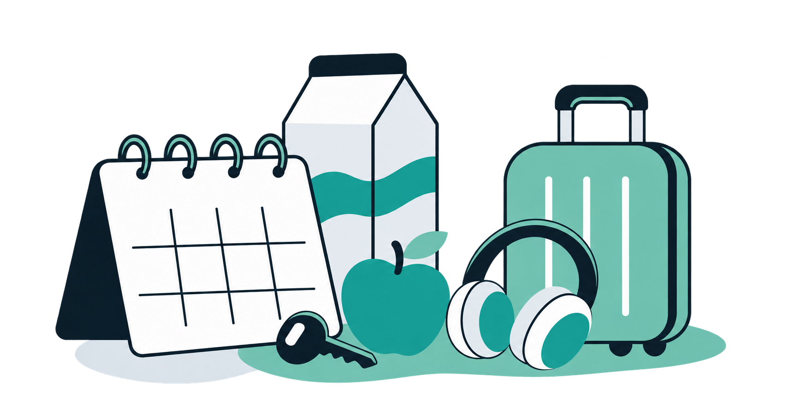

Сравнение иллюстраций v1 и v2
Сравнение ассетов на двух фонах при ширине до 320px. Это не снимок приложения. V2 усиливает внешние контуры для тёмной темы и уточняет прозрачный край. Небольшая тональная растяжка заливок сохраняется.

Сравнение ассетов на двух фонах при ширине до 320px. Это не снимок приложения. V2 усиливает внешние контуры для тёмной темы и уточняет прозрачный край. Небольшая тональная растяжка заливок сохраняется.
